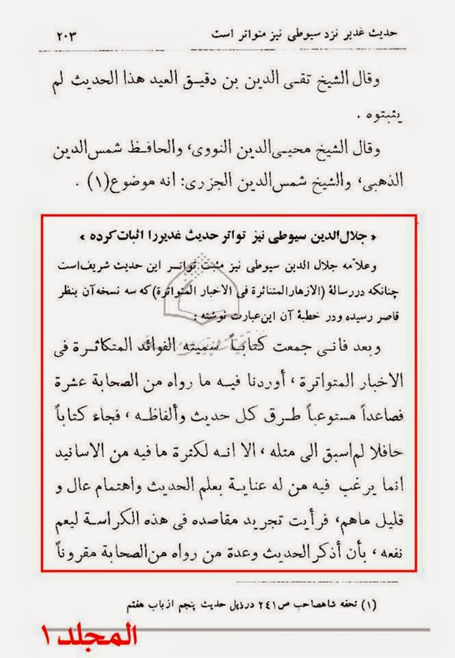

HADITH GHADEER

Mir Hamid Hussain wrote that Jalal Al-Din Al-Suyuti (quoted by):
The well-learned scholar, Jalal Al-Din Al-Suyuti, has also confirmed the Tawatur of that sacred Hadeeth, as in his treatise, Al-Azhar Al-Mutanathira Fi Al-Akhbar Al-Mutawatira, which three copies of it are owned by me, and the introduction of it, he writes the following:
And so, I have compiled a book, and called it, Al-Fawa’id Al-Mutakathira Fi Al-Akhbar Al-Mutawatira, where I have recorded what have been narrated from ten companions or more, and made it comprehensive for each Hadeeth’s chains and its different wordings, so it became a thorough book, which has no alike, but the multitude of the chains recorded there, no one would be concerned to read it, unless he has a high interest and concern in the science of Hadeeth, and those folks are always few, so; I have decided to abridge its contents in that booklet so its benefit become wider, in that way, I mention the Hadeeth and name few of the companions who narrated it, followed by listing some of who recorded it of the prominent Imams, and it would be sufficient for knowledge seekers, and I called it, Al-Azhar Al-Mutanathira Fi Al-Ahadeeth Al-Mutawatira.
There, he mentioned the Hadeeth of Al-Ghadeer among the Mutawatir Hadeeth, as he says, in the chapter of the Hadeeths of the virtues of his holiness, the Commander of the Faithful (a.s):
The Hadeeth of “Man Kuntu Mawla Fa Aliyyun Mawla”:
– Al-Tirmidhi narrated it from Zayd bin Arqam, Ahmad bin Alee and Aboo Ayub al-Ansari.
– Al-Bazzaz from Aboo Hurayra, Talha, Umara, ibn Abbas and Buraydah.
– Al-Tabarani from ibn Umar, Malik bin Al-Huwayrith, Habshi bin Junadah, Hawshab, Sa’ad bin Abi Waqqas, Abi Sa’eed Al-Khudri and Anas.
– Aboo Nu’aym from Khudayj Al-Ansari.
– Ibn Asakir narrated it from Umar bin Abdul-Aziz, who said: Many (of the companions) informed that they have heard from the Messenger of Allah (saw) saying; Man Kuntu Mawla Fa Aliyyun Mawla.
– Ibn Uqdah, recorded, in Kitab Al-Muwalat, that ibn Hubaysh said: Alee (a.s) asked: “Who are here from the companions of Muhammad?” So, twelve men, among whom are Qays bin Thabit, Habib bin Budayl bin Warqa, and they all testified that they have heard the Messenger of Allah (saw) saying, “Man Kuntu Mawla Fa Aliyyun Mawla.” He also recorded it as narrated by Ya’la bin Murrah, who said: When Alee (a.s) came to Kufa, he asked from people, who have heard the Messenger of Allah (saw) saying, “Man Kuntu Mawla Fa Aliyyun Mawla?” So, came to him ten and few more men, among them are Yazid or Zayd bin Sharhabeel Al-Ansari.
The end of the words of Al-Suyuti.
It is clear from the above statement that Al-Suyuti, absolutely, verily, surely and definitely believed that the Hadeeth is undoubtedly uttered by the Prophet (saw), and he, indeed, flamed the hearts of the leaders of denial and arrogance (denial of facts and arrogance to accept it) by the sparks of the Tawatur.
Source: Abaqat Al-Anwar. Vol. 1, Pg. # 203 – 205.

Shah Abdul-Aziz Dehlavi:
The 81st way of (Shi’as’ ways of) deception: It is that they narrate narrations which match with their beliefs from books of men who are mistakenly attributed to the Ahl us Sunnah, but in reality they are not, such as ibn Uqdah who was a Jaroudi (a sub-sect of Zaydism) Rafidhi.
Source: Tohfa Ithna Ashari. Pg. # 148.
Response One
The reply to Dehlavi and his kinds of extremely prejudiced so-called ‘Sunni’ scholars is that, early Sunni scholars attest ibn Uqdah as a high-ranking Sunni scholar, and the accusation of being Zaydi only occurred by Dehlavi and the later generations of so-called Sunni scholars. Not to mention that Zaydis themselves do not consider ibn Uqdah as one of their scholars. The worst part of it, is that Dehlavi considered Shi’as using the words of ibn Uqda, as one of their ways of plotting and deception against the so-called ‘Ahl us Sunnah!” Whilst it is more worthy that Dehlavi’s denial of ibn Uqda being a Sunni scholar is infact one of his own ways of plotting and deception to escape from the truth.
In the following quotations, we read statements by Sunni scholars who praised ibn Uqdah, and that they hold ibn Uqdah’s views and opinion in high esteem and so quote him in their books.
Mir Hamid Hussain:
It is not a hidden fact that ibn Uqdah, according to them (so-called Sunnis) is one of the earliest trustworthy scholars of Hadeeth, and the greatest. And their investigating Imams and their chief leaders transmit his statements here and there in their books, as you have seen examples. Haven’t you heard that ibn Hajar Al-Asqalani in his book, Al-Isabah, used the narrations of ibn Uqdah as proofs to confirm some of the Sahaba being Sahaba, and those Sahaba being mentioned by ibn Uqdah’s book was sufficient for him to confirm them as Sahaba.
Source: Abaqat Al-Anwar. Vol. 1, Pg. # 52 – 53.
FAYZ-e-QADEER fi ma yata’allaq bi-hadith al-ghadir;
Shaikh Abbas Qummi (RA) has summarized Hadith Ghadeer of Abqat-ul Anwar in the Name Fayz Qadeer
Sheikh Abbas Qummi:
It should be known that those who narrated and recorded the Hadeeth of Al-Ghadeer are a huge number of the prominent Imams, the dignified scientists, the Shuyukh of Islam, the great investigators, the reliable Muhadditheen (i.e. scholars of Hadeeth), the trustworthy researchers, the skilled Huffadh (plural of Hafidh, i.e. a scholar who memorizes the Holy Qur’aan and/or Hadeeth by heart), the well-versed critics, the sources of graciousness and perfection, the investigators in the science of Hadeeth and Rijal, the protectors of the dignity of the sciences of Diraya and Usool, the senior leaders, the great and potent scholars, among whom are the following:
People of the Second (Islamic/Hijri) century:
– Muhammad bin Is’haq
– Mo’ammar bin Rashid, Aboo Urwa Al-Azdi.
– Isra’eel bin Yunous Al-Subay’i, Aboo Yusuf Al-Koofi.
– Shurayk bin Abdullah Al-Qadhi.
– Muhammad bin Ja’far Al-Madani, better known as Ghandar.
– Al-Wakee’ bin Al-Jarrah bin Mulayh Al-Rawasi.
– Abdullah bin Numayr Al-Hamadani.
People of the Third (Islamic/Hijri) century:
– Muhammad bin Abdullah, Aboo Ahmad Al-Zubayri, Al-Habbal.
– Yahya bin Adam bin Sulayman Al-Umawi.
– Muhammad bin Idrees Al-Shafi’i.
– Aswad bin Amir, Shadhan Al-Shami.
– Abdul-Razzaq bin Homam Al-Sana’ani
– Hussain bin Muhammad Al-Marwazi.
– Al-Fadhl bin Dukayn, Aboo Nu’aym Al-Koofi.
– Affan bin Muslim Al-Saffar.
– Sa’eed bin Mansoor Al-Khorasani.
– Ibraheem bin Al-Hajjaj Al-Shami.
– Alee bin Hakeem Al-Iwadi.
– Alee bin Muhammad Al-Tanfasi.
– Hadba bin Khalid Al-Basri
– Abdullah bin Muhammad bin Abi Shayba Al-Absi.
– Ubaydullah bin Umar Al-Qawareeri.
– Is’haq bin Ibraheem Al-Handhali, better known as ibn Rahawayh.
– Uthman bin Muhammad, Abul-Hassan bin Abi Shaybah.
– Qutaybah bin Sa’eed Al-Balkhi.
– Ahmad bin Muhammd bin Hanbal Al-Shaybani.
– Haroon bin Abdullah, Aboo Moosa Al-Hammal.
– Muhammad bin Bashar Al-Abdi.
– Muhammad bin Al-Muthanna, Aboo Moosa Al-Anzi.
– Al-Hassan bin Urfa Al-Abdi.
– Muhammad bin Yahya Al-Dhuhli.
– Hajjaj bin Yusuf Al-Sha’ir Al-Baghdadi.
– Isma’eel bin Abdullah Isfahani, nicknamed as Samaweh.
– Hassan bin Alee bin Affan Al-Amiri.
– Muhammad bin Yazid bin Majah Al-Qazwini.
– Ahmad bin Yahya Al-Baladhuri.
– Abdullah bin Muslim Al-Dinawari, better known as ibn Qutaybah.
– Muhammad bin Isa bin Sura Al-Tirmidhi.
– Ahmad bin Amr Al-Shaybani, known as ibn Abi Asim.
– Zakariya bin Yahya Al-Khayyat.
– Abdullah bin Ahmad bin Muhammad bin Hanbal Al-Shaybani.
– Alee bin Muhammad Al-Mosaysi.
– Ibraheem bin Yunus Al-Baghdadi, nicknamed as Harami.
– Ahmad bin Amr bin Abdul-Khaliq Al-Bazzar.
People of the Fourth (Islamic/Hijri) century:
– Ahmad bin Shu’ayb Al-Nasa’i
– Hassan bin Sufyan Al-Nasawi.
– Ahmad bin Alee, Aboo Ya’la Al-Mosuli.
– Muhammad bin Jareer Al-Tabari.
– Abdullah bin Muhammad, Aboo Al-Qassim Al-Baghawi.
– Muhammad bin Alee bin Al-Hussain bin Bashir, Aboo Abdullah Al-Zahid Al-Hakeem Al-Tirmidhi.
– Ahmad bin Salama Al-Tahawi.
– Ahmad bin Muhammad bin Abd-Rabbeh, Aboo Amr Al-Qurtubi.
– Husain bin Isma’il Al-Mahamili.
– Ahmad bin Muhammad bin Sa’eed, Aboo Al-Abbas, better known as ibn Uqdah.
– Yahya bin Abdullah Al-Ghabari.
– Da’laj bin Ahmad Al-Sanjari.
– Muhammad bin Abdullah Al-Bazzar Al-Shafi’i.
– Muhammad bin Hayyan Al-Basti.
– Sulayman bin Ahmad Al-Tabarani.
– Ahmad bin Ja’far Al-Qutay’i.
– Alee bin Umar Al-Darqutni.
– Ubaydullah bin Abdullah, known as ibn Batta.
People of the Fifth (Islamic/Hijri) century:
– Muhammad bin Abdullah, Aboo Abdillah Al-Hakim.
– Abdul-Malik bin Muhammad bin Ibraheem Al-Kharkooshi.
– Ahmad bin Abdul-Rahman bin Ahmad Al-Farisi Al-Shirazi.
– Ahmad bin Mousa bin Mardawayh Al-Ispahani.
– Ahmad bin Muhammad bin Ya’qoub, Aboo Alee Meskawayh.
– Ahmad bin Muhammad bin Ibraheem Al-Tha’labi.
– Ahmad bin Abdullah, Aboo Nu’aym Al-Ispahani.
– Isma’il bin Alee bin Al-Hussain bin Zanjawayh Al-Razi, known as ibn al-Samman.
– Ahmad bin Al-Hussain bin Alee Al-Bayhaqi.
– Yusuf bin Abdullah, better known as ibn Abd Al-Barr, Al-Namri Al-Qurtubi.
– Ahmad bin Alee, known as al-Khateeb Al-Baghdadi.
– Alee bin Ahmad, Aboo Al-Hassan Al-Wahidi.
– Mas’oud bin Nasir Al-Sijistani.
– Alee bin Muhammad Al-Jilabi, known as ibn Al-Maghazili.
– Ubaydullah bin Abdullah, Aboo Al-Qassim Al-Hasakani.
– Alee bin Al-Hassan bin Al-Hussain Al-Khal’i.
People of the Sixth (Islamic/Hijri) century
– Muhammad bin Muhammad, Aboo Hamid Al-Ghazali.
– Al-Hussain bin Mas’oud Al-Baghawi.
– Razeen bin Mu’awiyah Al-Abdari.
– Ahmad bin Muhammad Al-Asimi.
– Mahmood bin Umar Al-Zamakhshari.
– Muhammad bin Alee bin Ibraheem, Aboo Al-Fath Al-Natanzi.
– Muwaffaq bin Ahmad, Aboo Al-Mow’ayyad, better known as Akhtab Kharazim.
– Umar bin Muhammad bin Khidr Al-Ardabili, known as Al-Mullah.
– Alee bin Al-Hassan bin Hibatullah, better known as ibn Asakir Al-Dimashqi.
– Muhammad bin Umar bin Ahmad bin Aboo Moosa Al-Madini Al-Ispahani.
– Fadhlullah bin Abi Sa’eed, Al-Hassan bin Al-Hassan Al-Toorbeshti.
– As’ad bin Mahmood bin Khalaf, Aboo Al-Fath Al-Ijli.
People of the Seventh (Islamic/Hijri) century:
– Muhammad bin Umar Al-Razi.
– Mubarak bin Muhammad bin Muhammad, Aboo Al-Sa’adat, better known as ibn Al-Athir.
– Alee bin Muhammad bin Muhammad bin Abd al-Karim Al-Jazari, Aboo Al-Hassan, (also) known as ibn Al-Athir.
– Muhammad bin Abd Al-Wahid Al-Maqdisi Al-Hanbali.
– Muhammad bin Talha Al-Nusaybi.
– Yusuf bin Muhammad, Aboo Al-Hajjaj Al-Balawi, known as ibn Al-Shaykh.
– Yusuf bin Kazghali, the grandson of ibn Al-Jawzi.
– Muhammad bin Yusuf Al-Ganji Al-Shafi’i.
– Abdul-Razzaq bin Rizqullah Al-Ras’ani.
– Yahya bin Sharaf Al-Nawawi.
– Ahmad bin Abdullah, Muhib Al-Din, Al-Tabari Al-Makki.
– Ibraheem bin Abdullah Al-Wisabi Al-Yamani Al-Shafi’i.
People of the Eighth (Islamic/Hijri) century:
– Ibraheem bin Muhammad Al-Hamawayni.
– Ahmad bin Muhammad bin Ahmad, Ala’ Al-Dawla Al-Simnani.
– Yusuf bin Abdul-Rahman Al-Mazzi.
– Hassan bin Hussain, Nidham Al-Din Al-A’araj Al-Nishapuri.
– Muhammad bin Abdullah, Wali Al-Din Al-Khatib.
– Umar bin Mudhaffar bin Umar, Aboo Hafs Al-Ma’ari Al-Halabi, famously known as ibn Al-Wardi.
– Ahmad bin Abd al-Qadir bin Maktoom, Taj Al-Din Al-Qaysi Al-Nahwi.
– Muhammad bin Yusuf Al-Zarandi.
– Muhammad bin Mas’oud Al-Kazeruni.
– Abdullah bin As’ad bin Alee Al-Yamani Al-Yafi’i.
– Isma’il bin Umar Al-Dimashqi, better known as ibn Kathir.
– Umar bin Al-Hassan, Aboo Hafs Al-Maraghi.
– Alee bin Shihab Al-Din Al-Hamadani.
– Muhammad bin Abdullah bin Ahmad Al-Maqdisi.
– Muhammad bin Ahmad Al-Farghani
People of the Ninth (Islamic/Hijri) century:
– Muhammad bin Muhammad, known as Khajeh Parsa.
– Muhmmad bin Muhammad, Shams Al-Din Al-Jazari.
– Ahmad bin Alee bin Abd Al-Qadir Al-Maqrizi.
– Shihab Al-Din bin Shams Al-Din Al-Dawlat Abadi.
– Ahmad bin Alee bin Muhammad, known as ibn Hajar Al-Asqalani.
– Alee bin Muhammad bin Ahmad, known as ibn Al-Sabbagh Al-Maliki Al-Makki.
– Mahmood bin Ahmad Al-Ayni Al-Hanafi.
– Hussain bin Mo’een Al-Din Al-Yazdi Al-Maybadhi.
– Abdullah bin Abdul-Rahman, famously known as Asil Al-Din Al-Muhaddith.
– Fadhlullah bin Roozbehan bin Fadhlullah Al-Khonji Al-Shirazi.
People of the Tenth (Islamic/Hijri) century:
– Alee bin Abdullah, Nur Al-Din Al-Samhoodi.
– Abdul-Rahman bin Abi Bakr, Jalal Al-Din Al-Suyuti.
– Ata’ Allah bin Fadhlullah Al-Shirazi, known as Jamal Al-Din Al-Muhaddith.
– Abdul-Wahab in Muhammad, Rafi’ Al-Din Ahmad.
– Ahmad bin Muhammad bin Alee bin Hajar Al-Haythami Al-Makki.
– Alee bin Hussam Al-Din Al-Muttaqi.
– Muhammad Tahir Al-Fattuni.
– Mirza Makhdoom bin Abd Al-Baqi.
People of the Eleventh (Islamic/Hijri) century:
– Alee bin Sultan Muhammad Al-Harawi, known as Al-Qari.
– Muhammad bin Abd Al-Ra’oof bin Taj Al-Arifin Al-Manawi.
– Sheikh bin Abdullah Al-Aydaroos Al-Yamani.
– Mahmood bin Muhammad bin Alee Al-Shaykhani Al-Qadiri Al-Madani.
– Alee bin Ibraheem bin Ahmad bin Alee, Nur Al-Din Al-Halabi.
– Ahmad bin Al-Fadhl bin Muhammad, Bakathir Al-Makki.
– Abd Al-Haqq bin Sayf Al-Din Al-Bukhari Al-Dehlavi.
– Muhammad bin Muhammad Al-Misri.
– Muhammad bin Safi Al-Din, Ja’far, called as Mahboob-e Alam.
– Salih bin Mahdi Al-Muqbili.
People of the Twelfth (Islamic/Hijri) century:
– Muhammad bin Abd Al-Rasool Al-Barzanji Al-Madani.
– Husam Al-Din bin Muhamma Bayazid Al-Saharnpuri.
– Mirza Muhammad bin Mu’tamid Khan Al-Badakhshani.
– Muhammad Sadr Aalam, the author of Ma’arij Al-Ula.
– Waliullah Ahmad bin Abd Al-Rahim Al-Dehlavi.
– Muhammad bin Isma’il bin Salah Al-Amir Al-Yamani Al-Sana’ani.
– Muhammad bin Alee Al-Sabban.
– Ibraheem bin Mor’i bin Atiyyah Al-Shabarkhiti Al-Maliki.
– Ahmad bin Abd Al-Qadir Al-Ijli.
People of the Thirteenth (Islamic/Hijri) century:
– Rashid Al-Din Khan Al-Dehlavi.
– Al-Moulawi Muhammad Mobin Al-Lucknawi.
– Muhammad Salim Al-Bukhari Al-Dehlavi.
– Al-Moulawi Waliullah Al-Lucknawi.
– Al-Moulawi Haydar Alee Al-Faydhabadi.
Source: Faydh Al-Qadeer. Pg. # 174 – 182.